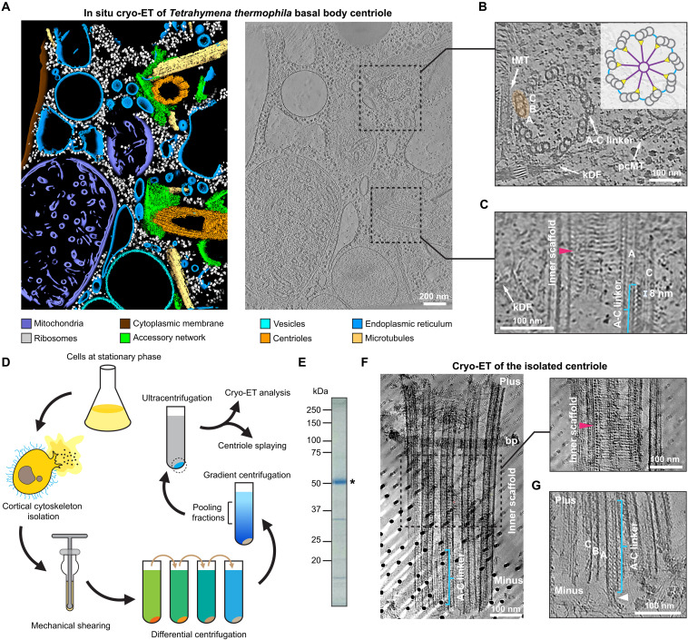

basal body A-C linker
A proteinaceous intertriplet linkage connecting the A-microtubule of one triplet to the C-microtubule of the neighboring triplet in the wall of a ciliary basal body. [DOI:10.1126/sciadv.ady3689]

NCBITaxon:5911) · Bin Cai, Jingwei Xu, Erik H. Collet, Ellen Aarts, Leo Luo, Alexander Leitner, Takashi Ishikawa, Pedro Beltrao, Chad G. Pearson, Martin Pilhofer, et al.; CC BY, via PubMed Central · CC_BY_4_0 · source: PMC PMC12506977.1 F1 · DOI:10.1126/sciadv.ady3689Synonyms: A-C linker
Part of: ciliary basal body (GO:0036064)
Components
| Component | Type | Part of / acts on | Grounding | Genes | Stoichiometry | Essential | Role |
|---|---|---|---|---|---|---|---|
| WRAP73 family protein | Protein | part of | Reviewed label only (reviewed name; no accession asserted) | WRAP73, WDR8 | UNKNOWN | A-link constituent modeled as a nine-bladed beta-propeller that contacts CEP135 and unassigned helical elements. It is retained in the proximal and transitional linker reconstructions in Tetrahymena.
| |
| CEP135 family protein | Protein | part of | Reviewed label only (reviewed name; no accession asserted) | CEP135, BLD10 | UNKNOWN | A-link constituent whose modeled N-terminal dimer contacts WRAP73 and the central filament. A segment bridges A-microtubule protofilaments in the proximal form. The transitional form has an altered orientation and a less well resolved microtubule-contacting segment.
| |
| TBC1D31 family protein | Protein | part of | Reviewed label only (reviewed name; no accession asserted) | TBC1D31, TBC1D31A, TBC1D31B, WDR67 | UNKNOWN | Two TBC1D31-like proteins contribute to the proximal C-link and its staggered central helical filament. They connect the C-side interface to the A-link. These densities are not assigned in the transitional C-link, which has a different, unresolved composition.
| |
| POC1 family protein | Protein | part of | Reviewed label only (reviewed name; no accession asserted) | POC1 | UNKNOWN | The C-terminal helix contributes to the proximal C-link alongside TBC1D31-like proteins; the N-terminal region associates with the neighboring B-C inner junction. The corresponding C-link density is not assigned in the transitional form.
|
Canonical examples
NCBITaxon:5911Tetrahymena thermophila — The study isolates basal bodies from strain SB715 and compares their architecture with in-situ cryotomograms. It calls these ciliary basal bodies centrioles for simplicity. GFP localization uses separately specified strains and constructs. [DOI:10.1126/sciadv.ady3689]
Functions
- intertriplet microtubule linkage — Connects the A-microtubule of one basal-body triplet to the C-microtubule of its neighbor through a proteinaceous A-link/C-link assembly. Proximal and transitional forms achieve this connection with different C-side compositions.
DOI:10.1126/sciadv.ady3689Cryotomography and reconstructions in Figures 1-2 and 6 show the intertriplet bridge. This is a structural linkage function, not a measured force threshold or a demonstrated temporal assembly sequence.
Mechanism graphs
Structural contacts bridging adjacent basal-body triplets (FUNCTION)
A density-supported model of the proximal Tetrahymena A-C linker's physical connections to neighboring microtubules.
| Subject | Predicate | Object | Evidence |
|---|---|---|---|
| WRAP73 family protein | coordinates | CEP135 family protein |
|
| CEP135 family protein | cross-bridges protofilaments of | A-microtubule of one basal-body triplet |
|
| TBC1D31 family protein | contacts | CEP135 family protein |
|
| POC1 family protein | contributes a C-terminal helix to | proximal C-link contact interface |
|
| TBC1D31 family protein | contributes modeled binding domains to | proximal C-link contact interface |
|
| proximal C-link contact interface | contacts | C-microtubule of the neighboring basal-body triplet |
|
| CEP135 family protein | contributes the A-side attachment of | basal body A-C linker |
|
| proximal C-link contact interface | contributes the C-side attachment of | basal body A-C linker |
|
Discussions
- CURATION_TODO (RESOLVED): Distinguish the intertriplet A-C linker from the enclosing basal body and other basal-body modules. A named, imaged multi-protein linkage is a distinct structure, not a single protein or synonym of the whole basal body.
- CURATION_TODO (OPEN): Resolve exact source-neutral groundings for WRAP73, CEP135, TBC1D31 and POC1 without using broader families or domains. All four named classes have structural evidence but their inspected integrated annotations do not establish exact family equivalence.
- CURATION_TODO (OPEN): Identify the unassigned helical elements and transitional C-link proteins, and determine form-specific assembly requirements. The four-family list is incomplete and must not be interpreted as the universal composition of every A-C linker.
- CURATION_TODO (OPEN): Reconcile TBC1D31 A/B aliases and CEP135 variant assignments before adding strain-paired protein examples. Article text and deposition mappings disagree at finer granularity than the supported family-level components.
- CURATION_TODO (RESOLVED): Do not import all adjacent microtubule and junction material as A-C linker constituents. A deposited structural model can include connected modules outside the structure's curated composition boundary.
Datasets
- Proximal A-C linker of Tetrahymena centriole, one repeating unit (
PDB:9QZC) · RCSB_PDB · EXPERIMENTAL_STRUCTURE
Organism: Tetrahymena thermophila · Platform: cryo-electron microscopy with single-particle reconstruction and model fittingSupports molecular assignments at the family level and preserves multiple unassigned protein chains. No global or local deposition copy number is promoted to whole-linker stoichiometry.
Official entry, all 15 polymer entities and assembly 1 inspected. The entry identifies NCBITaxon 5911 and links the primary DOI/PMID. Only metadata and links are retained, not coordinates. The CEP135 SIFTS assignment and article Methods differ; see the open discussion.
Evidence
DOI:10.1126/sciadv.ady3689Cai et al. 2025. Official PMC12506977.1 metadata and checksum-verified JATS inspected. Main text, methods and figure captions read; Figures 1, 3, 5 and 6 inspected visually.PMID:41061066Bibliographic identity matches the official PMC metadata and PDB primary citation.PDB:9QZCOfficial released model, exact primary citation, source organism, polymer entities and assembly inspected.
Curation history
2026-10-04T07:47:48Zcodex · CREATED_RECORD — Scaffolded by scripts/new_record.py2026-10-04T07:51:28Zcodex · EXPANDED_RECORD — Added four evidence-backed component classes, Tetrahymena example, proximal structural-contact graph, PDB dataset and licensed cryotomography. Preserved compositional polymorphism, uncertain groundings and conflicting protein assignments without inferring temporal assembly or stoichiometry.
Source: data/structures/cytoskeleton/basal_body_a_c_linker.yaml